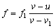

多普勒效應
編寫日期: 2006年3月16日

註: 若波源與接收器相接近取v1為正值，相遠離取負值。
例題: 一輛汽車以 25ms-1的速度行駛，駕駛員鳴響喇叭，其頻率為256Hz(駕駛員所聽到的)，空氣中的聲速是330ms-1。求靜止的行人(a)在車前方，(b)在車後方，所聽到喇叭聲的頻率。
按 17 FMLA 256 RUN 330 RUN 0 RUN 25 RUN (顯示 在車前方的頻率為276.9836 Hz)
再按 RUN RUN RUN RUN +/- RUN (顯示在車後方的頻率為237.9718 Hz)